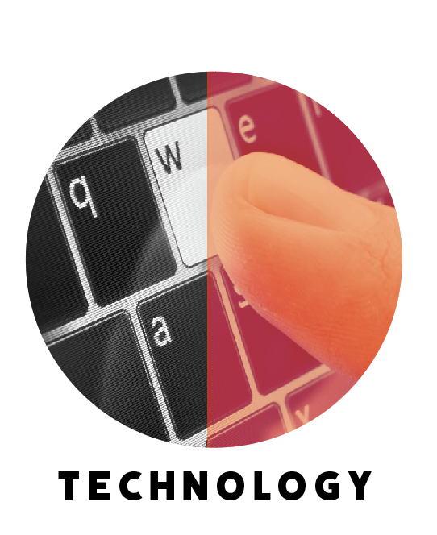
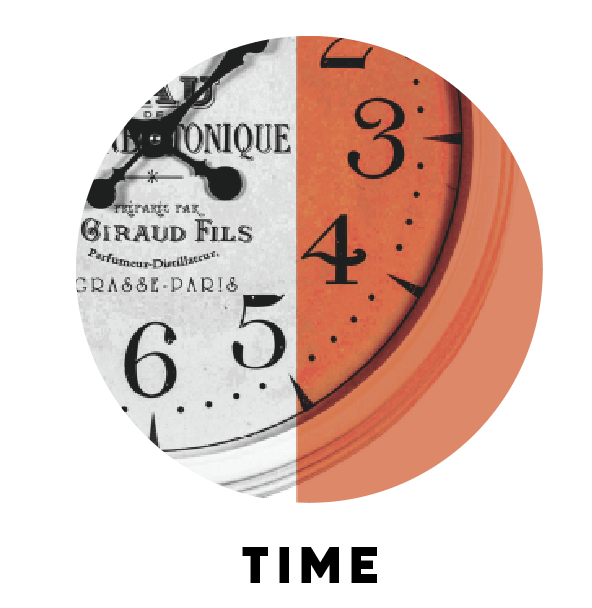

Public libraries make the world fairer, and they make life easier. In fact, the biggest problem with them is that we don't put nearly enough resources into them. Local libraries often have very limited selections of books, periodicals, and database access. Because everyone uses them, libraries need to be accessible. It is essential to provide people with a variety of ways to get there, including convenient transit routes, walkable streets, and adequate bicycle facilities.
The evolution of libraries has altered the use of space and resources. This is due to the processes and needs of the communities; communities need efficient, reliable, and quick access to information as well as a variety of physical spaces such as collaborative and quiet spaces. Modern libraries are able to shift and change based on the community’s needs whereas traditional libraries are not able to change. Libraries must adjust to the changing demands.
Libraries began as places to hold writings, scripts, and artifacts that were available to a few select people. The printing press gave the opportunity to make multiple copies of books quicker and The Modern Library publishing house allowed inexpensive reprints of titles and literature. This helped lead to the birth of the public library that we know today. Since then. Libraries have incorporated an array of books, technology, and resources as well as different types of spaces. This is the future of the modern library.
FACTORS PLAYING INTO THIS TRANSITION

The new growth of technology allows for more technology readily available to the public and needs to be implimented into libraries.
New research is happening at a rapid pace so it is important to be able to relay new information quickly to those who need it (such as a diagnosis or further research).
Space diversity allows for a wider target audience to use the building for different situations.

Time is becoming more valuable as years go on, so the more time saved while being in a modern library, (versus a traditional library) the more modern libraries will continue to help and grow with the public.